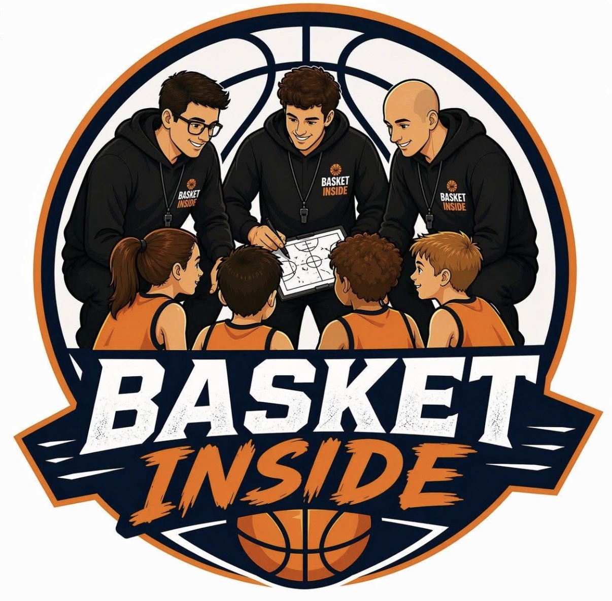
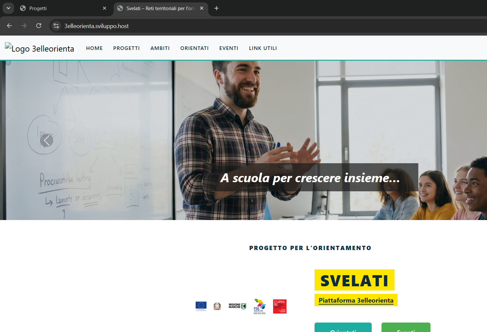
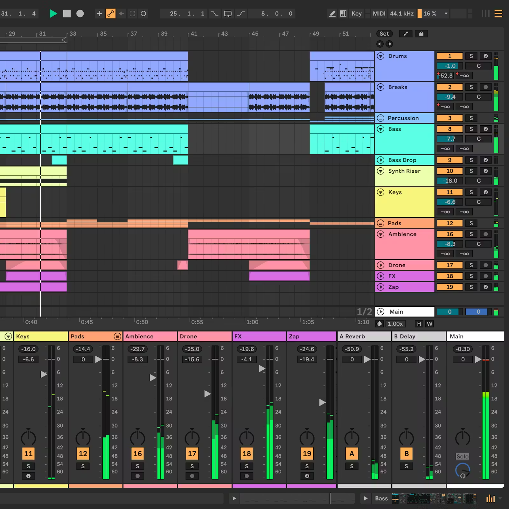

I miei progetti
I progetti a cui ho partecipato nella vita scolastica e personale.
Un mio grande sogno è sempre stato quello di fondare una società sportiva di pallacanestro. In realtà per fare ciò mi sto mettendo in gioco già da adesso. Infatti, oltre a continuare tutt'oggi ad allenare per la società jesina "Jesi Basket Academy Taurus", ovvero una sorta di nuova società dilettantistica nata nell'agosto 2024 grazie all'unione del settore giovanile della storica "Aurora Basket" e della "Taurus Basket Jesi", sono stato recentemente contattato da ex fidati colleghi allenatori che mi hanno offerto l'opportunità di collaborare alla realizzazione di una nuova società sportiva, di nome "Basket Inside". Momentaneamente Basket Inside si occupa di organizzare tornei per minibasket in giro per la regione Marche, grazie anche alla collaborazione con parchi divertimento per garantire un luogo di sport e svago allo stesso tempo.
Il nostro primissimo torneo si è tenuto il 7 giugno 2026 al parco acquatico "Verde azzurro" a San Faustino di Cingoli e, per l'occasione, 4 società importanti hanno aderito, tra cui la società "Virtus Basket Civitanova" di Civitanova Marche, la società anconetana "Cab Stamura Ancona", la società chiaravallese "Montevalle Basket" e la società "Centro minibasket Osimo" di Osimo. E’ da sottolineare anche la sponsorizzazione ottenuta dalla banca Mediolanum che ci ha aiutato economicamente. Il torneo ha avuto un successo e una notorietà che ha superato di molto le nostre aspettative. Infatti, oltre a ricevere complimenti da varie società, sia partecipanti che non di questa edizione, e ad ottenere di nuovo la collaborazione con il parco per la prossima edizione del torneo, la fortuna ha voluto che fosse presente anche una redattrice di QdM notizie, la quale ha voluto scrivere di noi pubblicando poi un articolo. Oltre all'organizzazione di tornei, nulla vieta che in futuro questa società possa poi crescere e diventare una vera e propria società sportiva dilettantistica, con tanto di squadre giovanili e senior. Per il momento i miei ruoli all'interno di Basket Inside, oltre al ruolo di co-founder, sono quelli di dirigente arbitrale e di social media manager della pagina instagram della società. Qui i nostri social: Facebook & Instagram

Per il nostro terzo anno di informatica, ci è stato richiesto di creare in C# un gioco completamente da zero. Perciò io e altri 2 compagni di classe abbiamo creato !Uso, un gioco musicale: in base al ritmo e al tipo di pulsante bisogna riuscire a premere tutti i tasti al momento giusto mentre si completa il livello. L'idea del gioco è ispirata a "Uso!", un gioco musicale già esistente e famoso nel mercato. infatti il nome del nostro gioco ne è un chiaro riferimento.
Il mio ruolo è stato quello di creare il menù principale, con gestione di tutte le voci, e della grafica dei pulsanti. Il gioco è stato creato su Visual Studio e, dato che è stata la nostra prima "vera" applicazione, non si può negare che il lavoro nel crearlo sia stato molto più duro del previsto. Alla fine siamo riusciti a portare su un buon risultato che è stato poi ben valutato.
3elleorienta è una piattaforma web, nata con lo scopo di orientare i ragazzi che devono uscire dalle scuole medie verso la scuola superiore ideale per loro. Vi aderiscono le scuole superiori del territorio marchigiano.
Nato nel nostro istituto, il progetto è stato realizzato nel corso di questo anno scolastico ed è presente online. Io mi sono occupato di gestire la sezione dei "Progetti", sia backend che frontend, e ho anche gestito la parte di grafica e design. Il link al sito è il seguente: 3elleorienta.

Il corso di cybersicurezza è un corso extrascolastico di 10 lezioni, nato da un'idea del professore Andrea Cacciamani, e, grazie anche alla collaborazione di un esperto esterno in materia, abbiamo imparato i concetti principali della cybersicurezza e di come applicarla
Il corso ci ha introdotto, in primis, al sistema operativo Kali Linux, un sistema operativo basato su Linux, creato appositamente per la sicurezza informatica e il penetration testing. Durante il corso abbiamo imparato a utilizzare i suoi strumenti più importanti, come ad esempio Nmap, Wireshark e Metasploit, e abbiamo anche imparato a riconoscere le vulnerabilità più comuni nei sistemi informatici Alla fine del corso, con le conoscenze apprese, ci è stato chiesto di penetrare un sito creato appositamente per l'occasione.
"Armonie digitali" è un progetto extrascolastico di 10 lezioni, nato da un'idea dei professori Stefano Bartoloni e Mirko Ricci con l'idea di formare gli studenti sulla musica unita a software di composizione musicali professionali. Il tutto è servito poi per realizzare un progetto finale di coppia.
Il corso è stato ideato nell'a.s 2023/2024 e come progetto finale ci era stata richesta una composizione musicale da zero con le conoscenze apprese. Io e il mio collega abbiamo deciso di realizzare una canzone in stile DnB atmosphere chiamata "atmo". La canzone ha avuto un gran successo tale che ci fece vincere il "primo premio". Ho partecipato anche alla seconda edizione del corso, avvenuta nell'a.s 2025/2026: il progetto finale prevedeva di eseguire l’Inno di Mameli durante il Consiglio Comunale dei giovani del 16/04/2026. Io e un altro partecipante del corso siamo stati scelti come chitarristi principali e, dopo tante prove con la base creata dagli altri membri del corso, siamo riusciti nell'intento, ricevendo tanti complimenti.
